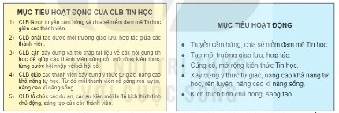
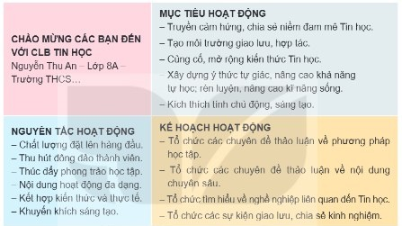
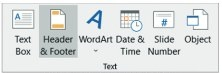
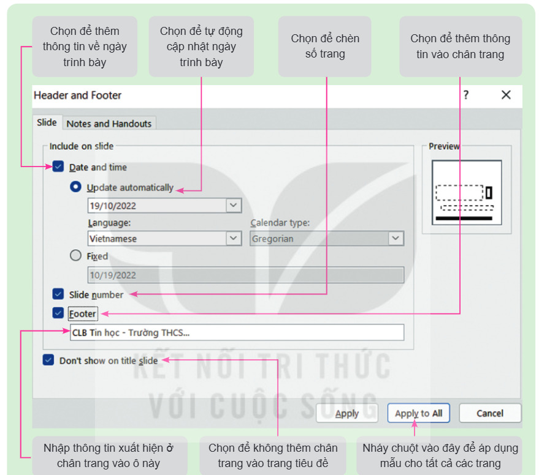
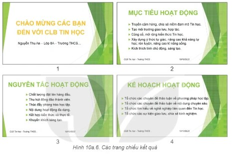

Dành cho giáo viên
Theo dõi lớp
| Học sinh / Nhóm | Đã nộp | Cập nhật |
|---|
Bước 1
1 Khởi động
Khởi động Bài trình chiếu cho lễ ra mắt CLB
Bạn An được giao nhiệm vụ tạo bài trình chiếu để trình chiếu trong lễ ra mắt CLB Tin học. Với mục tiêu ngắn gọn, ấn tượng, sáng tạo,… theo em bạn An cần chú ý đến những điều gì khi tạo bài trình chiếu?
Ghi bài Khởi động
Sau khi thầy cô chốt, em chép nội dung dưới đây vào vở.
Bước 2 · Hình thành kiến thức mới
2.1 Văn bản và màu sắc trên trang chiếu
Hoạt động 1 Đặc điểm của văn bản trên trang chiếu
Em hãy quan sát Hình 10a.1 (nội dung tài liệu mô tả dự án Thành lập CLB Tin học), Hình 10a.2 (nội dung trang chiếu) và trả lời các câu hỏi sau: 1. Văn bản ở hình nào chi tiết, đầy đủ hơn? Văn bản ở hình nào ngắn gọn hơn? 2. Văn bản trên trang chiếu có cần viết đầy đủ các thành phần của câu không?

Đọc hiểu Văn bản và màu sắc trên trang chiếu
Đọc mục 1 (SGK trang 46–47). Khác với văn bản trong tài liệu thông thường, văn bản trên trang chiếu có đặc điểm là ngắn gọn, chỉ nêu ý chính, không nêu chi tiết,… Văn bản trên trang chiếu góp phần quan trọng vào việc tạo ấn tượng, thu hút sự quan tâm, giúp người nghe nhanh chóng tiếp nhận được nội dung tóm tắt của trang chiếu. Màu sắc đóng vai trò quan trọng trong việc thiết kế một bài trình chiếu: một bài trình chiếu đẹp, chuyên nghiệp là sự phối hợp hoàn hảo của nội dung, bố cục và màu sắc. Để chọn đặt được màu sắc cho chữ hài hoà, ngoài những kiến thức cơ bản về màu sắc, cách phối màu,… em cần chú ý một số điểm sau:
Trên mô phỏng dưới đây, trang chiếu đang dùng văn bản của Hình 10a.1 với màu sắc, cỡ chữ chưa hợp lí. Hãy sửa nội dung cho ngắn gọn (gõ trực tiếp trên trang) và đổi màu chữ, màu nền, cỡ chữ cho tới khi bảng Gợi ý của máy toàn dấu ✓.
- Các màu nóng như đỏ, da cam, vàng,… mang lại cảm giác ấm áp, giúp người xem phấn chấn, hoạt bát, năng nổ.
- Các màu lạnh như xanh, tím,… mang lại cảm giác lạnh, giúp người xem bình tĩnh, hiền hoà, lắng dịu.
- Các màu trung tính như trắng, đen, be,… mang lại cảm giác lịch sự, nhẹ nhàng.
- Màu sắc chủ đạo nên được đặt sao cho hài hoà với nội dung. Ví dụ, bài trình chiếu về chủ đề giải trí, lễ hội,… nên dùng gam màu nóng; chủ đề giáo dục, học tập nên dùng gam màu trung tính; chủ đề về nghệ thuật, hay các bài trình chiếu muốn mang lại ấn tượng mạnh, các bài trình chiếu trong các sự kiện tri ân có thể dùng gam màu lạnh.
- Nên kết hợp các màu cùng nhóm với nhau (ví dụ: màu nóng như đỏ, cam, vàng có thể kết hợp với màu nâu; màu lạnh như xanh dương, xanh lục có thể đi cùng với màu xám).
- Không sử dụng quá nhiều màu trên một trang chiếu (bao gồm cả màu nền, màu chữ,…).
- Nên chọn màu văn bản có độ tương phản cao với màu nền.
Trên mô phỏng dưới đây, trang chiếu đang dùng văn bản của Hình 10a.1 với màu sắc, cỡ chữ chưa hợp lí. Hãy sửa nội dung cho ngắn gọn (gõ trực tiếp trên trang) và đổi màu chữ, màu nền, cỡ chữ cho tới khi bảng Gợi ý của máy toàn dấu ✓.
Câu hỏi SGK trang 47
Ghi bài 1. Văn bản và màu sắc trên trang chiếu
Sau khi thầy cô chốt, em chép nội dung dưới đây vào vở.
Bước 2 · Hình thành kiến thức mới
2.2 Số trang, đầu trang và chân trang
Hoạt động 2 Các thông tin cần thiết của bài trình chiếu
Theo em, các trang chiếu có cần đánh số không? Có cần thêm các thông tin vào đầu trang và chân trang không? Vì sao?
Đọc mục 2 (SGK trang 47). Giống như phần mềm soạn thảo văn bản, phần mềm trình chiếu cũng cho phép em thêm đầu trang, chân trang và đánh số thứ tự cho các trang bài trình chiếu. Đó là thông tin xuất hiện ở đầu và cuối của tất cả các trang chiếu. Thông tin này thường bao gồm tên người trình chiếu, tên công ti, tiêu đề bài trình chiếu, số trang hay thời gian trình chiếu,…
Ghi bài 2. Số trang, đầu trang và chân trang
Sau khi thầy cô chốt, em chép nội dung dưới đây vào vở.
Bước 2 · Thực hành
2.3 Thực hành: Tạo bài trình chiếu cho lễ ra mắt CLB Tin học
Nhiệm vụ LeRaMatCLBTinhoc.pptx
Em hãy tạo một bài trình chiếu mới, nhập nội dung cho bốn trang chiếu theo mẫu trong Hình 10a.3 rồi thực hiện các yêu cầu sau: định dạng văn bản trên trang chiếu, đặt màu sắc, cỡ chữ hài hoà và hợp lí với nội dung; đánh số trang, thêm đầu trang và chân trang.

Hướng dẫn (SGK minh hoạ bằng Microsoft PowerPoint 2016):
- a) Khởi động phần mềm và nhập nội dung. Trang chiếu đầu tiên là trang tiêu đề, chọn mẫu Title Slide. Ba trang tiếp theo chọn mẫu Title and Content. Nhập nội dung văn bản theo mẫu ở Hình 10a.3.
- b) Định dạng văn bản. Trang 1: dòng tiêu đề đặt phông Arial, cỡ 60, màu vàng, in đậm, căn giữa. Trang 2, 3, 4: tiêu đề trang đặt phông Arial, cỡ 54, màu xanh lá, in đậm, căn giữa; nội dung văn bản đặt phông Arial, cỡ 32, màu đen, chữ thường, căn trái, tạo danh sách dấu đầu dòng. Thay đổi vị trí các hộp văn bản để bố cục cân đối.
- c) Đánh số trang, thêm đầu trang và chân trang. Chọn Insert, trong nhóm lệnh Text chọn lệnh Header & Footer hoặc Slide Number (Hình 10a.4) để mở cửa sổ Header and Footer và thực hiện các bước theo hướng dẫn như Hình 10a.5.
- d) Hoàn thiện bài trình chiếu và lưu tệp. Áp dụng một mẫu định dạng cho bài trình chiếu (ví dụ kết quả như Hình 10a.6). Chọn File/Save để lưu tệp với tên LeRaMatCLBTinhoc.pptx.


Lưu ý: Em có thể định dạng cho số trang và thông tin trong phần đầu trang, chân trang giống như định dạng văn bản trên trang chiếu. Phần mềm trình chiếu còn hỗ trợ em in nội dung bài trình chiếu ra giấy (Handouts) để phát cho người nghe; em cũng có thể thêm đầu trang, chân trang vào tài liệu in bằng cách nháy chuột chọn Notes and Handouts trong cửa sổ Header and Footer. Ở chế độ Slide (Hình 10a.5), em không thêm được đầu trang; chỉ ở chế độ Notes and Handouts phần mềm PowerPoint mới có chức năng thêm đầu trang.
Làm thử trên mô phỏng: nội dung bốn trang đã được nhập sẵn (bước a). Nháy vào tiêu đề hoặc khung nội dung rồi chọn phông, cỡ, màu, B, căn lề. Mẹo: giữ Ctrl và nháy chọn trang 2, 3, 4 ở cột bên trái rồi định dạng một lần cho cả ba trang (trong PowerPoint thật có thể dùng Format Painter hoặc Slide Master). Sau đó bấm Header & Footer.

Ghi bài 3. Thực hành
Sau khi thầy cô chốt, em chép nội dung dưới đây vào vở.
Bước 3
3 Luyện tập
Luyện tập Header & Footer
Có thể kiểm tra từng phương án trên mô phỏng ở phần Thực hành (thử bấm Apply rồi so với Apply to All).
Ghi bài Luyện tập
Sau khi thầy cô chốt, em chép nội dung dưới đây vào vở.
Bước 4
4 Vận dụng
Vận dụng Bài trình chiếu giới thiệu một nội dung Tin học
Em hãy tạo bài trình chiếu giới thiệu một nội dung Tin học mà em chọn (ví dụ: giới thiệu một ngôn ngữ lập trình, giới thiệu về bảng tính điện tử,…) để trình chiếu trong buổi sinh hoạt CLB Tin học của trường. Hãy vận dụng kiến thức và kĩ năng đã biết để chọn đặt màu sắc, định dạng văn bản, trình bày các trang chiếu hài hoà, hợp lí với nội dung; đánh số trang, thêm đầu trang, chân trang;…
Có thể phác thảo trước trên mô phỏng (New Slide để thêm trang).
Có thể phác thảo trước trên mô phỏng (New Slide để thêm trang).
Ghi bài Vận dụng
Sau khi thầy cô chốt, em chép nội dung dưới đây vào vở.